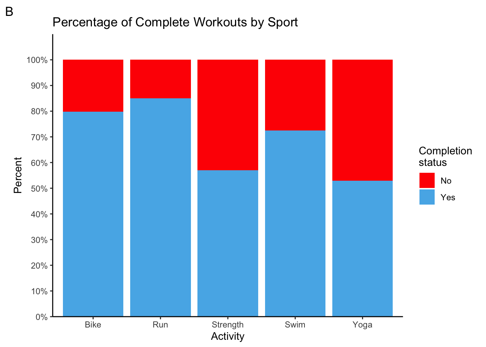
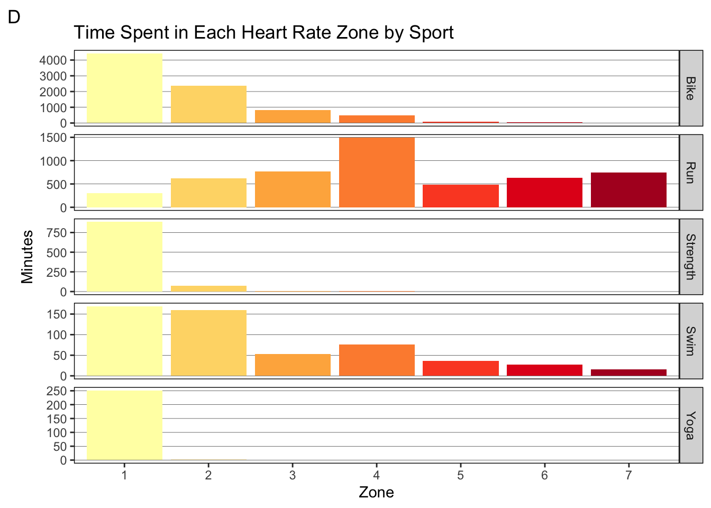

Analysis of my Triathlon Season: 2019-2020
#load tidyverse, lubridate, viridisLite, and RColorBrewer
library(tidyverse)
library(lubridate)
library(viridisLite)
library(RColorBrewer)
workouts <- read_csv("./data/workouts-2019-20.csv", na = "NA")
#remove cols not needed
workouts <- workouts %>%
select(-c("WorkoutDescription", "CoachComments", "AthleteComments",
"VelocityMax", "CadenceMax", "TorqueAverage", "TorqueMax",
"HRZone8Minutes", "HRZone9Minutes", "HRZone10Minutes",
"PWRZone7Minutes", "PWRZone8Minutes", "PWRZone9Minutes",
"PWRZone10Minutes"))
#rename cols to decrease ambiguity
workouts <- workouts %>%
rename(IntensityFactor = IF, TrainingStressScore = TSS,
PerceivedExertion = Rpe)
#Include only observations that were planned activities (i.e. not comments)
workouts <- workouts %>%
filter((WorkoutType %in% c("Swim", "Bike", "Run", "Strength")) |
str_detect(Title, "Yoga"), !str_detect(WorkoutType, "Day Off"))
#Change value "Other" to "Yoga"
workouts <- workouts %>%
mutate(WorkoutType = replace(WorkoutType, WorkoutType == "Other", "Yoga"))
#add col for completion (T/F) of workout
workouts <- workouts %>%
mutate(complete = !is.na(TimeTotalInHours))
#add col for km/h, min/km, and min/100meters (standard pace measurements for
#bike, run, and swim, respectively)
workouts <- workouts %>%
mutate(VelocityAverage =
replace(VelocityAverage, VelocityAverage == 0.000000, NA)) %>%
mutate(km.h = VelocityAverage*3.6, min.km = 100/(VelocityAverage*6),
sec.100m = 100/VelocityAverage)
#add month-year col
workouts <- workouts %>%
mutate(Month = format(WorkoutDay, "%m-%y"))
#add week col
workouts <- workouts %>%
mutate(Week = cut.Date(WorkoutDay, "weeks"))
#summary data
TotalPlannedWorkouts <- workouts %>%
summarize(TotalPlanned = nrow(workouts))
CompletionRate <- sum(workouts$complete == TRUE)/TotalPlannedWorkouts$TotalPlanned*100
TotalDistanceTraveled <- workouts %>%
summarize(DistanceInKm = sum(DistanceInMeters, na.rm = TRUE)/1000)
TotalTimeOverall <- workouts %>%
summarize(TotalHours = sum(TimeTotalInHours, na.rm = TRUE))
PlannedBySport <- workouts %>%
group_by(WorkoutType) %>%
summarize(PlannedWorkouts = n()) %>%
mutate(PercentOfTotal = PlannedWorkouts/TotalPlannedWorkouts$TotalPlanned*100)
#colour blind friendly colour palette
cbbPalette <- c("#000000", "#E69F00", "#56B4E9", "#009E73", "#F0E442", "#0072B2", "#D55E00", "#CC79A7")Mini recap
This season went from 2019-10-07 to 2020-10-01. There were of course many trials and tribulations due to the pandemic. Namely, my swimming was sporadic and my strength training was almost non-existent once the lockdown hit. All the races I had planned (there were 4!) were canceled, so I had very little in terms of results to show. Nonetheless, I was able to complete two socially-distanced races and several time trials. I will post the results of those events at the end.
My largest priority race for this year was Ironman Muskoka 70.3. This race consists of 1.9 km of swimming, 90 km of biking, and 21.1 km (half-marathon) of running. I had a target time of 05:00 hours or less: 00:35 minutes swimming, 02:40 biking, 01:40 running, and 00:05 transitioning. My training was tailored to those race distances and those target times. Let’s see how well I did with following that plan despite never getting to race in Muskoka this year!
Note: I have included bar graphs showing totals for each sport. If you are a triathlete, you can use my graphs to compare to your own totals. In the future, I will use these totals to compare between treaining seasons.
Completion rate
Let’s first take a look at how many workouts I had planned throughout the year, and how many of those workouts I successfully completed. I will assume that an activity with not recorded time is one that I did not complete, and the opposite is true for activities with a recorded time. It looks like a total of 498 workouts were planned. I completed 365 workouts (one for every day of the year!!!), for a completion rate of 73%. That’s not bad considering I had to cancel many workouts because of the lockdown and to compensate for fatigue from heavier training weeks.
Taking a look at graph A, we see that I had more bike workouts than any other workout type. That makes sense since it makes up the majority of the race. Second comes running, but third is strength instead of swimming. Scheduling this many strength sessions was intentional because this year I prioritized a strength routine to avoid last year’s injuries from derailing my training. Now, how often did I complete those planned workouts for each sport. It looks like I completed 80% or more of my biking and running workouts. That is really good. It also makes sense because those activities were not limited by the lockdown for the most part. I completed over 70% of my planned swim workouts, which I did not think was true before making this graph. I did not swim for all of March and April, but I did make a point to swim in the lake once it got warm enough. Strength workouts took a big hit because I lack the necessary equipment at home and gyms have been a no-go since March. Now yoga is really an area where I have no excuse. I often put those aside in favour of other workouts. I need to get better at completing yoga sessions when I plan them. After all, mobility from yoga helps in all aspects of triathlon.
workouts %>%
ggplot(aes(WorkoutType)) +
geom_bar(fill = cbbPalette[3]) +
geom_text(aes(label = ..count..), stat = "count", vjust = -0.1) +
theme_classic() +
labs(title = "Number of Planned Workouts by Sport", x = "Activity", y = "Number of Planned Workouts", tag = "A") +
scale_y_continuous(breaks = seq(0, 160, 20), expand = expansion(mult = c(0, 0.1)))
workouts %>%
ggplot(aes(WorkoutType, fill = complete)) +
geom_bar(position = "fill") +
theme_classic() +
scale_fill_manual(labels = c("No", "Yes"), values = c("Red", cbbPalette[3])) +
labs(title = "Percentage of Complete Workouts by Sport", x = "Activity", y = "Percent",
fill = "Completion \nstatus", tag = "B") +
scale_y_continuous(labels = scales::percent_format(accuracy = 1), breaks = seq(0, 1, 0.1),
expand = expansion(mult = c(0, 0.1)))
Time commitment
Now, we will take a look at how much time I actually spent training overall and for each activity. I trained for a total of 307 hours. It’s no surprise that I trained most of the hours in biking, followed by running then swimming. In a well executed season, the proportion of total time between the three major sports should be similar to the proportion between your goal times for each sport. That means 12% for swimming, 53% for biking, and 35% for running. That’s really close to what we see in graph B! However, I took a bit of time from running and added it to swimming. That’s because swimming is my weakest sport, and I knew a lot of improvements could be made with extra time in the water. Looks like I did really well with dividing my time.
TimeBySport <- workouts %>%
group_by(WorkoutType) %>%
summarize(TotalHours = sum(TimeTotalInHours, na.rm = TRUE))
TimeBySport %>%
ggplot(aes(WorkoutType, TotalHours)) +
geom_col(fill = cbbPalette[3]) +
geom_text(aes(label = round(TotalHours, 0)), vjust = -0.1) +
theme_classic() +
labs(title = "Time Spent Training by Sport", x = "Activity", y = "Time (hours)", tag = "A") +
scale_y_continuous(breaks = seq(0, 160, 20), expand = expansion(mult = c(0, 0.1)))
TimeBySport %>%
filter(WorkoutType %in% c("Bike", "Swim", "Run")) %>%
ggplot(aes(x = "", TotalHours, fill = factor(WorkoutType))) +
geom_bar(stat = "identity", colour = "black") +
geom_text(aes(label = paste(round(TotalHours/sum(TotalHours)*100, 1), "%", "\n", WorkoutType)),
position = position_stack(vjust = 0.5)) +
coord_polar(theta = "y") +
theme(
line = element_blank(),
rect = element_blank(),
axis.title = element_blank(),
axis.ticks = element_blank(),
axis.text = element_blank(),
legend.position = "none",
plot.title = element_text(hjust = 0.5)) +
labs(title = "Percent of Time in Each Sport", tag = "B") +
scale_fill_manual(values = c(cbbPalette[6], cbbPalette[4], cbbPalette[5]))Distance traveled
Time is usually the best way to plan your training because it helps us schedule our lives outside of training. The amount of time I can commit to training is usually my limiting factor. However, distance is still a very useful metric because it helps us train specifically for the race distances we plan to cover in competition. Let’s take a look at my overall distance covered, distance in each sport, and the proportion each sport that makes up the total distance. This season, I covered a total distance of 4516 km. That is about half way accross Canada (9306 km). Not surprisingly, biking makes up for 3543 km of the total. As with times, a well executed training season shows roughly equivalent proportions between the distances covered in training and those of your highest priority race for that season. That means roughly 2% for swimming, 80% for biking, and 19% for running. Take a look at graph B. That is almost spot on! Again, a bit more was done in swimming, but that was by design.
DistanceBySport <- workouts %>%
filter(WorkoutType %in% c("Bike", "Run", "Swim")) %>%
group_by(WorkoutType) %>%
summarize(DistanceInKm = sum(DistanceInMeters, na.rm = TRUE)/1000)
DistanceBySport %>%
ggplot(aes(WorkoutType, DistanceInKm)) +
geom_col(fill = cbbPalette[3]) +
geom_text(aes(label = round(DistanceInKm, 0)), vjust = -0.1) +
labs(title = "Distance by Activity", x = "Activity", y = "Distance (km)", tag = "A") +
theme_classic() +
scale_y_continuous(breaks = seq(0, 4000, 250), expand = expansion(mult = c(0, 0.1)))
DistanceBySport %>%
ggplot(aes(x = "", DistanceInKm, fill = factor(WorkoutType))) +
geom_bar(stat = "identity", colour = "black") +
geom_text(aes(x = 1.65, label = paste(round(DistanceInKm/sum(DistanceInKm)*100, 1), "%", "\n", WorkoutType)),
position = position_stack(vjust = 0.5)) +
coord_polar(theta = "y") +
theme(
line = element_blank(),
rect = element_blank(),
axis.title = element_blank(),
axis.ticks = element_blank(),
axis.text = element_blank(),
legend.position = "none",
plot.title = element_text(hjust = 0.5)) +
labs(title = "Percent of Distance in Each Sport", tag = "B") +
scale_fill_manual(values = cbbPalette[c(6,4,5)])
Heart rate zones
For an Ironman 70.3, your heart rate should be mostly in zone 2. This should allow you to finish the race without burning the matchstick too soon. Therefore, most of one’s training should be in zone 2. Actually, most people follow an 80/20 rule where only 20% of the training is spent in zones higher than zone 2. However, that is not what we see with my heart rate data. I spent over 6000 hours in zone 1! That makes up all of my warm up and cool downs, recovery bike rides, yoga, and a lot of strength work. This is actually good news - it tells us injury prevention was prioritized! Now, zone 2 does make up for the second most at 22%. However, everything above zone 2 makes up for a whopping 38% of the training time. This could mean that I needed more time in higher zones to increase my threshold pace because my target paces were quite lofty. Still, 38% is quite a lot. Alternatively, it could mean that I did not follow all the workouts properly and spent more time in higher zones than I should have. The latter is most likely, and I remember several instances where my heart rate was above what it should have been for a workout. There we go! This is an area I can definitely improve on: keep my heart rate in the prescribed zones for a given workout.
I’m also interested in how the heart rate distribution broke down between the three major sports (graph C and D).In graph C, we can see that running makes up for a greater proportion of the time as the zones increase. biking has the opposite trend. Swimming is less clear, but we can tell it makes up less than 10% of the time in any given zone (heart rate is not very useful in swimming because I cannot check it while I am swimming). Indeed, we see that most of my biking was done in zone 1 and 2 (graph D). A massive 4000 of the 6000 zone 1 minutes came from biking! This is great and exactly what we want! For running, we don’t see the same trend.I actually spend most of my running time in zone 4 and zone 3. Zone 5-7 also make up for 500 or more hours each. Therefore, we can revise the above area of improvement: keep my heart rate in the prescribed zones for a given run workout.
TotalTimeInHRZones <- workouts %>%
select(17:23) %>%
summarize_all(sum, na.rm = TRUE) %>%
pivot_longer(everything(), names_to = "Zones", values_to = "Minutes")
TotalTimeInHRZones %>%
ggplot(aes(Zones, Minutes, fill = Zones)) +
geom_col() +
geom_text(aes(label = round(Minutes, 0)), vjust = -0.1) +
annotate(geom = "label", x = 5, y = 4000, hjust = 0, size = 2.8, fill = "grey", fontface = "bold",
label = "FTHR = Functional Threshold Heart Rate
\nZone 1 = 85% FTHR or lower
\nZone 2 = 85%-89% FTHR
\nZone 3 = 90%-94% FTHR
\nZone 4 = 95%-99% FTHR
\nZone 5 = 100%-102% FTHR
\nZone 6 = 103%-106% FTHR
\nZone 7 = 106% FTHR or higher") +
theme_classic() +
theme(legend.position = "none") +
labs(title = "Total Time Spent in Each Heart Rate Zone", tag = "A") +
scale_x_discrete(labels = c(1:7)) +
scale_y_continuous(breaks = seq(0, 6000, 500), expand = expansion(mult = c(0, 0.1))) +
scale_fill_brewer(palette = "YlOrRd")
TotalTimeInHRZones %>%
ggplot(aes(x = "", Minutes, fill = factor(Zones))) +
geom_bar(stat = "identity", colour = "black") +
geom_text(aes(x = 1.65, label = paste(round(Minutes/sum(Minutes)*100, 0), "%")),
position = position_stack(vjust = 0.5)) +
coord_polar(theta = "y") +
theme(
line = element_blank(),
rect = element_blank(),
axis.title = element_blank(),
axis.ticks = element_blank(),
axis.text = element_blank(),
plot.title = element_text(hjust = 0.5)) +
labs(title = "Percent of Time in Each Zone", fill = "Zone", tag = "B") +
scale_fill_brewer(palette = "YlOrRd", labels = c(1:7))
TimeInHRZoneBySport <- workouts %>%
group_by(WorkoutType) %>%
select(WorkoutType, 17:23) %>%
summarize_all(sum, na.rm = TRUE) %>%
pivot_longer(!WorkoutType, names_to = "HRZone", values_to = "Minutes")
TimeInHRZoneBySport %>%
ggplot(aes(HRZone, Minutes, fill = WorkoutType)) +
geom_col(position = "fill") +
theme_classic() +
theme(legend.position = "bottom") +
scale_x_discrete(labels = c(1:7)) +
scale_y_continuous(labels = scales::percent_format(accuracy = 1), breaks = seq(0, 1, 0.1),
expand = expansion(mult = c(0, 0.1))) +
scale_fill_manual(values = cbbPalette[c(6,4,2,5,7)]) +
labs(title = "Percent of Time in Each Zone by Sport", x = "Zone", y = "Percent", fill = "Activity", tag = "C")
TimeInHRZoneBySport %>%
ggplot(aes(HRZone, Minutes, fill = HRZone)) +
geom_col() +
theme(panel.background = element_rect(fill = NA),
panel.grid.major.y = element_line(colour = "black", size = 0.1,),
panel.grid.major.x = element_blank(),
panel.border = element_rect(colour = "black", fill = NA),
strip.background = element_rect(colour = "black"),
legend.position = "none") +
labs(title = "Time Spent in Each Heart Rate Zone by Sport", x = "Zone", tag = "D") +
scale_x_discrete(labels = c(1:7)) +
scale_fill_brewer(palette = "YlOrRd") +
facet_grid(rows = vars(WorkoutType), scales = "free_y")
Bike Power
Again, the 80/20 rule also applies here. We can see that I spend only 61% of the time in zone 2 or lower. I actually spend almost the same amount of time in zone 2 as I do in zone 3! This is great for increasing my strength on the bike, but it runs the risk of injuries and excess fatigue. I can likely attribute this to my focus on speed, rather than on power, during my bike workouts. There’s now another area of improvement: focus more on my power output and stay within the prescribed power zones for bike workouts.
PWRZoneMinutes <- workouts %>%
filter(WorkoutType == "Bike") %>%
select(24:29) %>%
summarize_all(sum, na.rm = TRUE) %>%
pivot_longer(everything(), names_to = "PWRZone", values_to = "Minutes")
PWRZoneMinutes %>%
ggplot(aes(PWRZone, Minutes, fill = PWRZone)) +
geom_col() +
geom_text(aes(label = round(Minutes, 0)), vjust = -0.1) +
annotate(geom = "label", x = 4, y = 2000, hjust = 0, size = 2.8, fill = "grey", fontface = "bold",
label = "FTP = Functional Threshold Power
\nZone 1 = 55% FTP or lower
\nZone 2 = 55%-74% FTP
\nZone 3 = 75%-89% FTP
\nZone 4 = 90%-104% FTP
\nZone 5 = 105%-120% FTP
\nZone 6 = 121% FTP or higher") +
theme_classic() +
theme(legend.position = "none") +
labs(title = "Time Spent in Each Power Zone", x = "Zone", tag = "A") +
scale_x_discrete(labels = c(1:6)) +
scale_y_continuous(breaks = seq(0, 3000, 500), expand = expansion(mult = c(0, 0.1))) +
scale_fill_brewer(palette = "YlOrRd")
PWRZoneMinutes %>%
ggplot(aes(x = "", Minutes, fill = factor(PWRZone))) +
geom_bar(stat = "identity", colour = "black") +
geom_text(aes(x = 1.65, label = paste(round(Minutes/sum(Minutes)*100, 0), "%")),
position = position_stack(vjust = 0.5)) +
coord_polar(theta = "y") +
theme(
line = element_blank(),
rect = element_blank(),
axis.title = element_blank(),
axis.ticks = element_blank(),
axis.text = element_blank(),
plot.title = element_text(hjust = 0.5)) +
labs(title = "Percent of Time in Each Zone", fill = "Zone", tag = "B") +
scale_fill_brewer(palette = "YlOrRd", labels = c(1:6)) Training Stress Score
Training stress score is like the ultimate metric for determining how hard a workout is. Training stress score takes into account heart rate, power, distance, and duration to calculate a number value of how much stress your body experienced during a workout. Greater stress from a workout usually means greater fitness gains (if you take the time to recover properly). The downside is that it’s a complicated metric calculated from several variables, and it cannot be used in a training session to gauge how hard you are working. Taking a look at how much training stress I incurred between the three major sports, we see that there is a much more even distribution between the sports than in the other metrics. This means that despite differences in time, heart rate, and distance between the sports, there was a more equal distribution in the amount of stress my body experienced between the sports. Given I am only in my second year of serious triathlon training, this kind of makes sense. I have plenty of room to improve in all three sports. Therefore, stressing my body equally in all three sports should pay off in significant fitness gains across swimming, biking, and running. It will be interesting to see over the years if the training stress distribution changes to favour one of the sports.
TSSBySport <- workouts %>%
select(WorkoutType, TrainingStressScore) %>%
group_by(WorkoutType) %>%
filter(WorkoutType %in% c("Bike", "Swim", "Run")) %>%
summarize(TotalTSS = sum(TrainingStressScore, na.rm = TRUE))
TSSBySport %>%
ggplot(aes(WorkoutType, TotalTSS)) +
geom_col(fill = cbbPalette[3]) +
geom_text(aes(label = round(TotalTSS, 0)), vjust = -0.1) +
theme_classic() +
labs(title = "Training Stress Score by Sport", x = "Activity", y = "Training Stress Score (sum)", tag = "A") +
scale_y_continuous(expand = expansion(mult = c(0, 0.1)))
TSSBySport %>%
ggplot(aes(x = "", TotalTSS, fill = factor(WorkoutType))) +
geom_bar(stat = "identity", colour = "black") +
geom_text(aes(label = paste(round(TotalTSS/sum(TotalTSS)*100, 0), "%", "\n", WorkoutType)),
position = position_stack(vjust = 0.5)) +
coord_polar(theta = "y") +
theme(
line = element_blank(),
rect = element_blank(),
axis.title = element_blank(),
axis.ticks = element_blank(),
axis.text = element_blank(),
plot.title = element_text(hjust = 0.5),
legend.position = "none") +
labs(title = "Percent of Total Training Stress Score \nby Sport", fill = "Activity", tag = "B") +
scale_fill_manual(values = cbbPalette[c(6,4,5)])
Race results
I ended up doing 3 races in 2020! That is a miracle given how many were canceled. My first race was organized my Hart House at the University of Toronto. The format is built for beginners to get a feel for triathlons and for more experienced athletes to test themselves on a different format. Each sport has a 15 minute time limit, and the goal is to go as far as you can in those 15 minutes. Usually, transitions between sports count towards your time, but that obviously does not apply to this triathlon. My goal was to just go as hard as I can for the whole 15 minutes, and my results reflect that. I managed under 2 minutes per 100 meters in the swim, an astounding 38.48 km/h on the bike (it was a stationary, so these results could be contested), and just over 4 min/km on the run! This gave me confidence that I could race near the paces I was aiming for. Now, let’s look at some longer race distances to see if the paces hold up. Takeaway: my body can go the speeds I want it to
HartHouseSwim <- c("00:15:00", 800, 112.6)
HartHouseBike <- c("00:15:00", 9.62, 38.48)
HartHouseRun <- c("00:15:00", 3.64, 4.1)
HartHouseTriDistance <- c(800, 9.62, 3.64)
HartHouseTriPace <- c(112.6, 38.48, 4.1)
HartHouseResults <- cbind(HartHouseSwim, HartHouseBike, HartHouseRun)
colnames(HartHouseResults) <- c("Swim", "Bike", "Run")
rownames(HartHouseResults) <- c("Time (hh:mm:ss)", "Distance (m, km, km)", "Pace (sec/100m, km/h, min/km)")
knitr::kable(HartHouseResults, caption = "**Hart House Triathlon Results (Feb 29, 2020):** No transitions.", align = "ccc")| Swim | Bike | Run | |
|---|---|---|---|
| Time (hh:mm:ss) | 00:15:00 | 00:15:00 | 00:15:00 |
| Distance (m, km, km) | 800 | 9.62 | 3.64 |
| Pace (sec/100m, km/h, min/km) | 112.6 | 38.48 | 4.1 |
I did two races in Caledon, which were both organized by Barrie Shepley. Barrie is a former Olympic triathlon coach and a coach to many other professional triathletes. He was able to get Public Health approval to organize very small races. Each start consisted of a handful of people who all started a few minutes apart. At the end of several events he would compile all their results into a table that he would then send via email. Basically, my race results on a Saturday were put up against other peoples’ results from a Tuesday. Again, there were no transition times recorded because social distancing measures were put in place to prevent gathering during transition - this made some peoples’ transition times a lot longer than normal.
My first Caledon race was a long course race. The distances are supposed to be 1.5 km swim, 50 km bike, and 15 km run. The actual distances are a bit off because of limited course options. But hey, I am not complaining. At least I got to race safely. I was really happy with my swim and run on this event. Again, I averaged under 2 minutes per 100 meters in the swim. I also made it under 5 min/km on the run! Those are very close to the paces I needed to meet my Ironman 70.3 goals, and these distances are a lot closer to Ironman 70.3 distances. However, the bike was a disappointment to me at first. I wanted to average at least 30 km/h. After talking to a few professional triathletes who said it was the hardest bike course they have ever done due to the amount of uphill portions, I felt a lot better about my results. Overall, I think my training has paid off to this point! Takeaway: trust that my training has prepared me properly to race
CaledonLongCourseSwim <- c("00:33:36", 1.657, 110.5)
CaledonLongCourseBike <- c("02:00:45", 52.6, 25.92)
CaledonLongCourseRun <- c("01:07:49", 13.8, 4.93)
CaledonLongCourseResults <- cbind(CaledonLongCourseSwim, CaledonLongCourseBike, CaledonLongCourseRun)
rownames(CaledonLongCourseResults) <- c("Time (hh:mm:ss)", "Distance (km)", "Pace (sec/100m, km/h, min/km)")
colnames(CaledonLongCourseResults) <- c("Swim", "Bike", "Run")
knitr::kable(CaledonLongCourseResults, caption = "**Caledon Long Course Results (Aug 02, 2020):** No transitions. Independent starts", align = "ccc")| Swim | Bike | Run | |
|---|---|---|---|
| Time (hh:mm:ss) | 00:33:36 | 02:00:45 | 01:07:49 |
| Distance (km) | 1.657 | 52.6 | 13.8 |
| Pace (sec/100m, km/h, min/km) | 110.5 | 25.92 | 4.93 |
My last race of the season was also in Caledon, but it was an Olympic distance race. The distances are supposed to be 1.5 km swim, 40 km bike, and 10 km run. Again, the actual distances are only shorter because of course restrictions. My mind going into this race was very prepared to give everything I have, and my results reflect that mental preparation I put into this event. My swim was a bit slower that the other two races, but it was still under 2 minutes per 100 meters. My bike speed on the same course as last time improved to over 28 km/h, which was the second highlight of this event. My number one highlight was crushing the run with a pace of 4:16 min/km after going hard on the bike. All of these paces are above or near what I needed to complete my Ironman 70.3 goals. I can say this was a good way to end the season. Takeaway: proper mental preparation before a race is vital to my performance
CaledonOlympicSwin <- c("00:24:50", 1.305, 113.7)
CaledonOlympicBike <- c("01:12:46", 35, 28.64)
CaledonOlympicRun <- c("00:35:18", 8.3, 4.28)
CaledonOlympicResults <- cbind(CaledonOlympicSwin, CaledonOlympicBike, CaledonOlympicRun)
rownames(CaledonOlympicResults) <- c("Time (hh:mm:ss)", "Distance (km)", "Pace (sec/100m, km/h, min/km)")
colnames(CaledonOlympicResults) <- c("Swim", "Bike", "Run")
knitr::kable(CaledonOlympicResults, caption = "**Caledon Olympic Triathlon Results (Aug 30, 2020):** No transitions. Independent starts", align = "ccc")| Swim | Bike | Run | |
|---|---|---|---|
| Time (hh:mm:ss) | 00:24:50 | 01:12:46 | 00:35:18 |
| Distance (km) | 1.305 | 35 | 8.3 |
| Pace (sec/100m, km/h, min/km) | 113.7 | 28.64 | 4.28 |
Conclusion
This year was a strange year all around. I trained consistently in each sport until March. Almost nothing stood in my way of completing a workout. If I was tired and didn’t want to walk in the cold to go swim, I told myself to just get ready and step outside. Then it was much easier to just keep going. If I was tired from waking up at 6:00 am to get a bike ride in, I told myself to just get up for 5 minutes and drink a coffee by the window. Then, I was awake and could hop on the bike. Then all of a sudden pools and gyms closed, races were canceled, and I was unsure if I could even run or bike outside. On top of this, I was in the middle of preparing for my Master’s defence that was set to take place virtually on April 1st! This meant my trainer and I had to get creative, adjust our expectations, and set goals a bit differently. I moved to doing a lot of indoor bike rides and more runs. Once the lake was warm enough to swim in with a wetsuit, I started swimming there. We also improvised some at-home strength routines, so I could stay on top of injury prevention. This flexibility allowed me to keep some momentum and capitalize on the things I could do, rather than dwell on the things I could not. In the end, I was able to complete three races in the season, and my performance in them was something to be proud of. On top of that, I have some great takeaways to help me improve my 2020/2021 triathlon season.